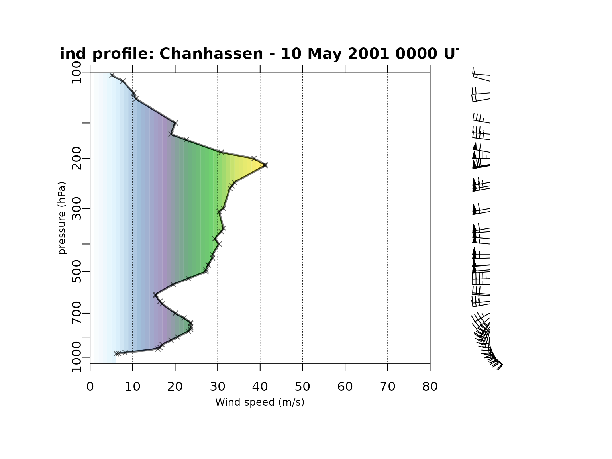

Introduction to the thundeR package
Bartosz Czernecki, Mateusz Taszarek, Piotr Szuster
Source:vignettes/getstarted.Rmd
getstarted.RmdthundeR

thundeR is a freeware R package and
collection of functions for rapid computation and visualisation of
convective parameters commonly used in the operational forecasting of
severe convective storms. Core algorithm is based on C++ code
implemented into R language via Rcpp. This solution allows
to compute over 200 thermodynamic and kinematic parameters in less than
0.02s per profile and process large datasets such as reanalyses or
operational NWP models in a reasonable amount of time. Package has been
developed since 2017 by research meteorologists specializing in severe
convective storms and is constantly updated with new features.
Online browser:
Online rawinsonde browser of thundeR package is
available at http://rawinsonde.com
Main functions:
sounding_compute()- A core function for calculating convective parameters commonly used in the operational prediction of severe convective storms. Returns a vector of parameters.sounding_plot()- Function to plot a composite of Skew-T, hodograph and selected convective parameters on a single layoutsounding_save()- Auxiliary function tosounding_plot` that plots a composite of Skew-T, hodograph and selected convective parameters on a single layout and exports graphical file.get_sounding()- Download rawinsonde measurement from sounding database of the University of Wyoming in a form convenient to use withthundeRpackage.
Examples
Examples show aplication of selected thundeR package
functions
Example 1
Draw Skew-T, hodograph and convective parameters on a single layout and export to png file:
library(thunder)
data("sounding_vienna") # load example dataset (Vienna rawinsonde profile for 23 Aug 2011 12UTC):
pressure = sounding_vienna$pressure # vector of pressure [hPa]
altitude = sounding_vienna$altitude # vector of altitude [meters]
temp = sounding_vienna$temp # vector of temperature [degree Celsius]
dpt = sounding_vienna$dpt # vector of dew point temperature [degree Celsius]
wd = sounding_vienna$wd # vector of wind direction [azimuth in degrees]
ws = sounding_vienna$ws # vector of wind speed [knots]
sounding_save(filename = "Vienna.png",
title = "Vienna - 23 August 2011 1200 UTC",
pressure, altitude, temp, dpt, wd, ws)
#> Your display device is 10 x 6 in.
#> It is recommended to use at least 10 x 7.5 in. plotting window
#> or consider saving the layout into file
Example 2
Download North Platte rawinsonde profile for 03 Jul 1999 00UTC and export to png file:
profile = get_sounding(wmo_id = 72562, yy = 1999, mm = 7, dd = 3, hh = 0)
#> [1] "http://weather.uwyo.edu/cgi-bin/sounding?TYPE=TEXT%3ALIST&YEAR=1999&MONTH=07&FROM=0300&TO=0300&STNM=72562"
#> /tmp/RtmpRFM7tN/file1b2e28eb404d
head(profile) # show first few rows of downloaded dataset
#> pressure altitude temp dpt wd ws
#> 3 906 849 32 26 110 14
#> 4 899 914 31 25 120 14
#> 5 869 1219 28 22 145 13
#> 6 850 1414 26 21 155 15
#> 7 811 1829 22 19 175 17
#> 8 802 1924 21 19 183 17
sounding_save(filename = "NorthPlatte.png", title = "North Platte - 03 July 1999 0000 UTC", profile$pressure, profile$altitude, profile$temp, profile$dpt, profile$wd, profile$ws)
#> Your display device is 10 x 6 in.
#> It is recommended to use at least 10 x 7.5 in. plotting window
#> or consider saving the layout into file
Example 3
Compute convective parameters based on a sample vertical profile data:
pressure = c(1000, 855, 700, 500, 300, 100, 10) # pressure [hPa]
altitude = c(0, 1500, 2500, 6000, 8500, 12000, 25000) # altitude [meters]
temp = c(25, 10, 0, -15, -30, -50, -92) # temperature [degree Celsius]
dpt = c(20, 5, -5, -30, -55, -80, -99) # dew point temperature [degree Celsius]
wd = c(0, 90, 135, 180, 270, 350, 0) # wind direction [azimuth in degress]
ws = c(5, 10, 20, 30, 40, 5, 0) # wind speed [knots]
accuracy = 2 # accuracy of computations where 3 = high (slow), 2 = medium (recommended), 1 = low (fast)
options(digits = 3) # change output formatting precision
sounding_compute(pressure, altitude, temp, dpt, wd, ws, accuracy)
#> MU_CAPE MU_CAPE_M10 MU_CAPE_M10_PT
#> 2.27e+03 9.98e+02 3.13e+02
#> MU_02km_CAPE MU_03km_CAPE MU_HGL_CAPE
#> 2.48e+02 5.76e+02 1.62e+03
#> MU_CIN MU_LCL_HGT MU_LFC_HGT
#> 0.00e+00 7.30e+02 7.30e+02
#> MU_EL_HGT MU_LI MU_LI_M10
#> 8.30e+03 -1.01e+01 -1.09e+01
#> MU_WMAX MU_EL_TEMP MU_LCL_TEMP
#> 6.74e+01 -2.88e+01 1.77e+01
#> MU_LFC_TEMP MU_MIXR MU_CAPE_500
#> 1.77e+01 1.49e+01 1.08e+03
#> MU_CAPE_500_M10 MU_CAPE_500_M10_PT MU_CIN_500
#> 3.89e+02 1.37e+02 0.00e+00
#> MU_LI_500 MU_LI_500_M10 SB_CAPE
#> -5.04e+00 -6.23e+00 2.27e+03
#> SB_CAPE_M10 SB_CAPE_M10_PT SB_02km_CAPE
#> 9.98e+02 3.13e+02 2.48e+02
#> SB_03km_CAPE SB_HGL_CAPE SB_CIN
#> 5.76e+02 1.62e+03 0.00e+00
#> SB_LCL_HGT SB_LFC_HGT SB_EL_HGT
#> 7.30e+02 7.30e+02 8.30e+03
#> SB_LI SB_LI_M10 SB_WMAX
#> -1.01e+01 -1.09e+01 6.74e+01
#> SB_EL_TEMP SB_LCL_TEMP SB_LFC_TEMP
#> -2.88e+01 1.77e+01 1.77e+01
#> SB_MIXR ML_CAPE ML_CAPE_M10
#> 1.49e+01 1.65e+03 6.70e+02
#> ML_CAPE_M10_PT ML_02km_CAPE ML_03km_CAPE
#> 2.25e+02 1.64e+02 4.22e+02
#> ML_HGL_CAPE ML_CIN ML_LCL_HGT
#> 1.25e+03 0.00e+00 9.75e+02
#> ML_LFC_HGT ML_EL_HGT ML_LI
#> 9.75e+02 7.90e+03 -7.62e+00
#> ML_LI_M10 ML_WMAX ML_EL_TEMP
#> -8.58e+00 5.74e+01 -2.64e+01
#> ML_LCL_TEMP ML_LFC_TEMP ML_MIXR
#> 1.52e+01 1.52e+01 1.30e+01
#> LR_0500m LR_01km LR_02km
#> -1.00e+01 -1.00e+01 -1.00e+01
#> LR_03km LR_04km LR_06km
#> -9.05e+00 -7.86e+00 -6.67e+00
#> LR_16km LR_26km LR_24km
#> -6.00e+00 -5.00e+00 -5.77e+00
#> LR_36km LR_26km_MAX LR_500700hPa
#> -4.29e+00 -5.71e+00 -4.29e+00
#> LR_500800hPa LR_600800hPa FRZG_HGT
#> -5.18e+00 -5.83e+00 2.50e+03
#> FRZG_wetbulb_HGT HGT_max_thetae_03km HGT_min_thetae_04km
#> 2.28e+03 0.00e+00 3.75e+03
#> Delta_thetae Delta_thetae_min04km Thetae_01km
#> 2.81e+01 2.88e+01 3.31e+02
#> Thetae_02km DCAPE Cold_Pool_Strength
#> 3.24e+02 5.98e+02 1.26e+01
#> Wind_Index PRCP_WATER Moisture_Flux_02km
#> 3.39e+01 2.71e+01 3.04e+01
#> RH_01km RH_02km RH_14km
#> 7.29e-01 7.20e-01 6.45e-01
#> RH_25km RH_36km RH_HGL
#> 5.55e-01 4.44e-01 4.60e-01
#> BS_0500m BS_01km BS_02km
#> 1.92e+00 3.83e+00 8.78e+00
#> BS_03km BS_06km BS_08km
#> 1.27e+01 1.80e+01 1.74e+01
#> BS_36km BS_26km BS_16km
#> 9.37e+00 1.33e+01 1.66e+01
#> BS_18km BS_EFF_MU BS_EFF_SB
#> 2.03e+01 1.42e+01 1.42e+01
#> BS_EFF_ML BS_SFC_to_M10 BS_1km_to_M10
#> 1.39e+01 1.55e+01 1.36e+01
#> BS_2km_to_M10 BS_MU_LFC_to_M10 BS_SB_LFC_to_M10
#> 9.88e+00 1.41e+01 1.41e+01
#> BS_ML_LFC_to_M10 BS_MW02_to_SM BS_MW02_to_RM
#> 1.37e+01 7.30e+00 1.01e+01
#> BS_MW02_to_LM BS_HGL_to_SM BS_HGL_to_RM
#> 1.08e+01 4.89e+00 7.79e+00
#> BS_HGL_to_LM MW_0500m MW_01km
#> 9.99e+00 2.31e+00 2.43e+00
#> MW_02km MW_03km MW_06km
#> 3.35e+00 4.80e+00 7.81e+00
#> MW_13km SRH_100m_RM SRH_250m_RM
#> 6.84e+00 4.25e+00 1.01e+01
#> SRH_500m_RM SRH_1km_RM SRH_3km_RM
#> 1.97e+01 3.96e+01 1.53e+02
#> SRH_36km_RM SRH_100m_LM SRH_250m_LM
#> 2.37e+02 1.50e+00 3.55e+00
#> SRH_500m_LM SRH_1km_LM SRH_3km_LM
#> 6.97e+00 1.40e+01 -1.31e+01
#> SRH_36km_LM SV_500m_RM SV_01km_RM
#> -2.44e+01 3.90e-03 3.88e-03
#> SV_03km_RM SV_500m_LM SV_01km_LM
#> 4.80e-03 1.01e-03 1.10e-03
#> SV_03km_LM MW_SR_500m_RM MW_SR_01km_RM
#> -1.44e-03 1.01e+01 1.02e+01
#> MW_SR_03km_RM MW_SR_500m_LM MW_SR_01km_LM
#> 9.54e+00 1.38e+01 1.29e+01
#> MW_SR_03km_LM MW_SR_VM_500m_RM MW_SR_VM_01km_RM
#> 8.46e+00 1.01e+01 1.02e+01
#> MW_SR_VM_03km_RM MW_SR_VM_500m_LM MW_SR_VM_01km_LM
#> 1.05e+01 1.38e+01 1.28e+01
#> MW_SR_VM_03km_LM SV_FRA_500m_RM SV_FRA_01km_RM
#> 8.83e+00 9.98e-01 9.87e-01
#> SV_FRA_03km_RM SV_FRA_500m_LM SV_FRA_01km_LM
#> 9.56e-01 2.59e-01 2.80e-01
#> SV_FRA_03km_LM Bunkers_RM_A Bunkers_RM_M
#> -2.86e-01 2.09e+02 7.79e+00
#> Bunkers_LM_A Bunkers_LM_M Bunkers_MW_A
#> 1.22e+02 1.32e+01 1.52e+02
#> Bunkers_MW_M Corfidi_downwind_A Corfidi_downwind_M
#> 7.81e+00 2.19e+02 1.47e+01
#> Corfidi_upwind_A Corfidi_upwind_M K_Index
#> 2.31e+02 9.18e+00 2.44e+01
#> Showalter_Index TotalTotals_Index SWEAT_Index
#> 3.75e+00 4.44e+01 1.06e+02
#> STP_fix STP_new STP_fix_LM
#> 3.60e-01 2.00e-01 1.27e-01
#> STP_new_LM SCP_fix SCP_new
#> 7.08e-02 6.23e+00 4.92e+00
#> SCP_fix_LM SCP_new_LM SHIP
#> -5.37e-01 -4.24e-01 6.29e-01
#> HSI DCP MU_WMAXSHEAR
#> 1.72e+00 1.15e+00 1.21e+03
#> SB_WMAXSHEAR ML_WMAXSHEAR MU_EFF_WMAXSHEAR
#> 1.21e+03 1.03e+03 9.58e+02
#> SB_EFF_WMAXSHEAR ML_EFF_WMAXSHEAR EHI_500m
#> 9.58e+02 7.97e+02 2.80e-01
#> EHI_01km EHI_03km EHI_500m_LM
#> 5.62e-01 2.16e+00 9.88e-02
#> EHI_01km_LM EHI_03km_LM SHERBS3
#> 1.99e-01 -1.86e-01 6.48e-01
#> SHERBE SHERBS3_v2 SHERBE_v2
#> 7.01e-01 8.64e-01 9.35e-01
#> DEI DEI_eff TIP
#> 1.52e+00 1.19e+00 2.44e+00Example 4
Download sounding and draw hodograph:
chanhassen = get_sounding(wmo_id = 72649, yy = 2001, mm = 5, dd = 10, hh = 00)
#> [1] "http://weather.uwyo.edu/cgi-bin/sounding?TYPE=TEXT%3ALIST&YEAR=2001&MONTH=05&FROM=1000&TO=1000&STNM=72649"
#> /tmp/RtmpRFM7tN/file1b2e6945aa90
sounding_hodograph(ws = chanhassen$ws, wd = chanhassen$wd,
altitude = chanhassen$altitude,max_speed = 40)
title("Chanhasses - 10 May 2001, 00:00 UTC")Example 5
Use the previously downloaded sounding and draw customized Skew-T plot (e.g. up to 150 hPa instead of default 100 hPa) with changed line width:
# chanhassen = get_sounding(wmo_id = 72649, yy = 2001, mm = 5, dd = 10, hh = 00)
skewt_plot(ptop = 150, close_par = FALSE)
skewt_lines(chanhassen$temp, chanhassen$pressure, ptop = 150, col = "red", lwd = 3)
skewt_lines(chanhassen$dpt, chanhassen$pressure, ptop = 150, col = "blue", lwd = 3)
Example 6
Wind speed vertical profile with wind barbs:
# chanhassen = get_sounding(wmo_id = 72649, yy = 2001, mm = 5, dd = 10, hh = 00)
oldpar = par()
par(fig = c(0.1, 0.75, 0.15, 0.9), new = TRUE, mar = c(1, 1, 1, 1), oma = c(0, 0, 0, 0))
#> Warning in par(fig = c(0.1, 0.75, 0.15, 0.9), new = TRUE, mar = c(1, 1, :
#> calling par(new=TRUE) with no plot
sounding_wind(pressure = chanhassen$pressure, ws = chanhassen$ws, yaxs = TRUE)
title("Wind profile: Chanhassen - 10 May 2001 0000 UTC", outer = F)
par(fig = c(0.65, 0.95, 0.15, 0.9), new = TRUE, mar = c(1, 1, 1, 1), oma = c(0, 0, 0, 0))
sounding_barbs(chanhassen$pressure, chanhassen$ws, chanhassen$wd, chanhassen$altitude, interpolate = FALSE, barb_cex = 1)
par(oldpar)
#> Warning in par(oldpar): graphical parameter "cin" cannot be set
#> Warning in par(oldpar): graphical parameter "cra" cannot be set
#> Warning in par(oldpar): graphical parameter "csi" cannot be set
#> Warning in par(oldpar): graphical parameter "cxy" cannot be set
#> Warning in par(oldpar): graphical parameter "din" cannot be set
#> Warning in par(oldpar): graphical parameter "page" cannot be setExample 7 - thunder in Python
It is possible to launch thunder under Python via
rpy2 library. Below you can find the minimum reproducible
example. Make sure that pandas and rpy2
libraries are available for your Python environment. If not install
required python packages with pip install pandas and
pip install rpy2
Launch thunder under Python with rpy2 and
numpy:
### load required packages
#> from rpy2.robjects.packages import importr
#> from rpy2.robjects import r,pandas2ri
#> import rpy2.robjects as robjects
#> pandas2ri.activate()
### load thunder package (make sure that it was installed in R before)
#> importr('thunder')
### download North Platte sounding
#> profile = robjects.r['get_sounding'](wmo_id = 72562, yy = 1999, mm = 7, dd = 3,hh = 0)
### compute convective parameters
#> parameters = robjects.r['sounding_compute'](profile['pressure'], profile['altitude'], #> profile['temp'], profile['dpt'], profile['wd'], profile['ws'], accuracy = 2)
### customize output and print all computed variables, e.g. most-unstable CAPE (first element) equals 9413 J/kg
#> print(list(map('{:.2f}'.format, parameters)))
# '9413.29', '233.35', '1713.74', '0.00', '775.00', '775.00', '15500.00', '-16.55',
# '137.21', '-66.63', '23.98', '23.98', '23.36', '9413.29', '233.35', '1713.74', '0.00',
# '775.00', '775.00', '15500.00', '-16.55', '137.21', '-66.63', '23.98', '23.98', '23.36',
# '7805.13', '115.22', '1515.81', '-4.35', '950.00', '950.00', '15000.00', '-14.66',
# '124.94', '-68.41', '22.46', '22.46', '21.17', '-9.57', '-6.68', '-8.80', '-8.68',
# '-9.06', '-7.70', '4250.00', '3500.00', '0.00', '2866.00', '50.57', '52.93', '1381.81',
# '308.98', '29.00', '37.59', '87.03', '0.58', '0.40', '0.47', '8.85', '11.21', '13.88',
# '20.28', '29.33', '6.84', '21.70', '28.32', '28.32', '27.17', '17.06', '12.53', '12.53',
# '11.74', '7.09', '6.08', '7.77', '7.69', '19.89', '62.07', '110.06', '156.48', '6.25',
# '7.77', '4.26', '-42.78', '284.67', '5.65', '197.60', '14.19', '218.89', '7.77',
# '31.50', '-12.14', '60.40', '677.12', '4.67', '6.10', '29.46', '29.46', '3.86', '12.35',
# '2783.07', '2783.07', '2534.22', '3886.07', '3886.07', '3395.00']Important notes
- Remember to always input wind speed data in knots.
- Script will always consider first height level as the surface (h = 0), therefore input height data can be as above sea level (ASL) or above ground level (AGL).
- For efficiency purposes it is highly recommended to input data for a maximum of 16-18 km AGL or lower.
- Values of parameters will be different for different accuracy settings.